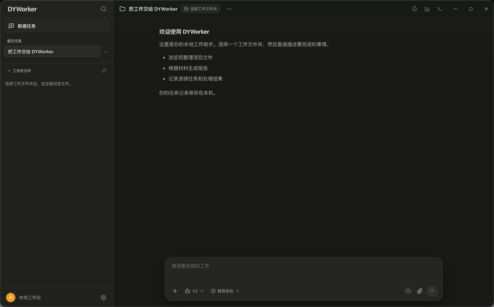
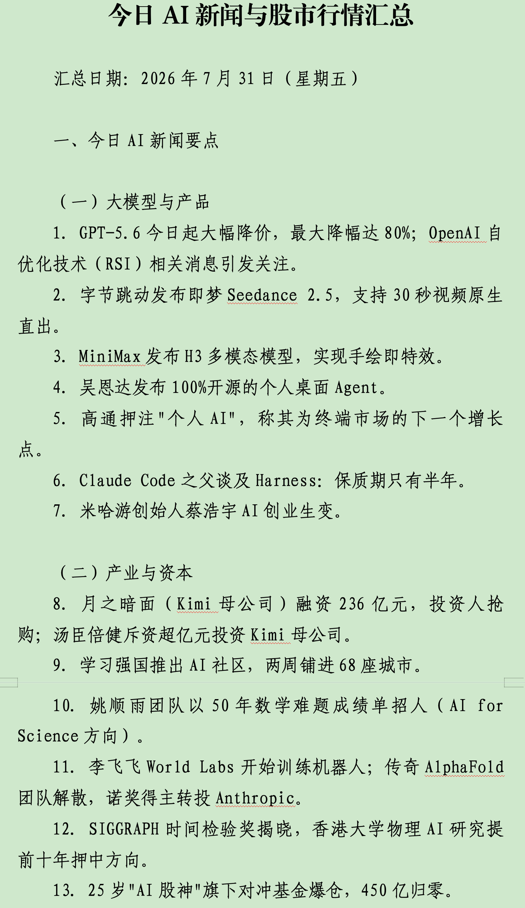
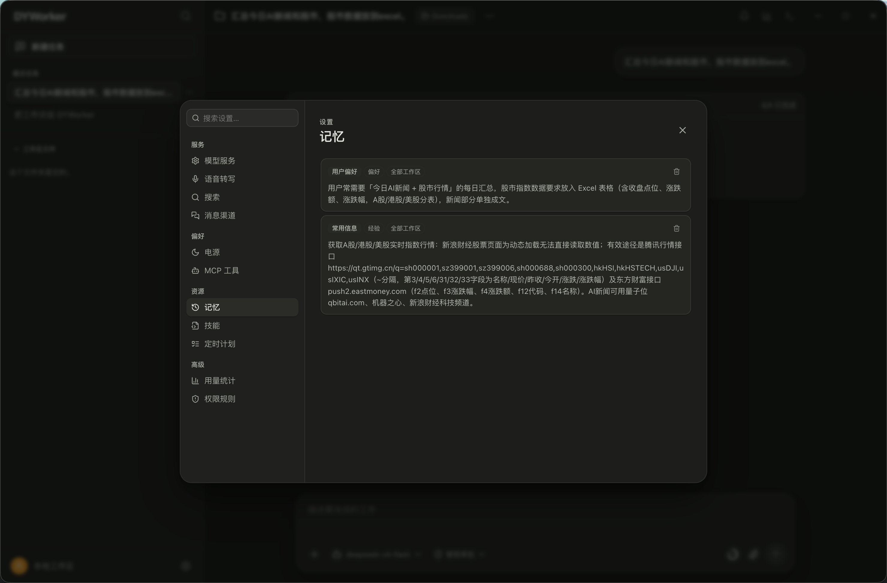
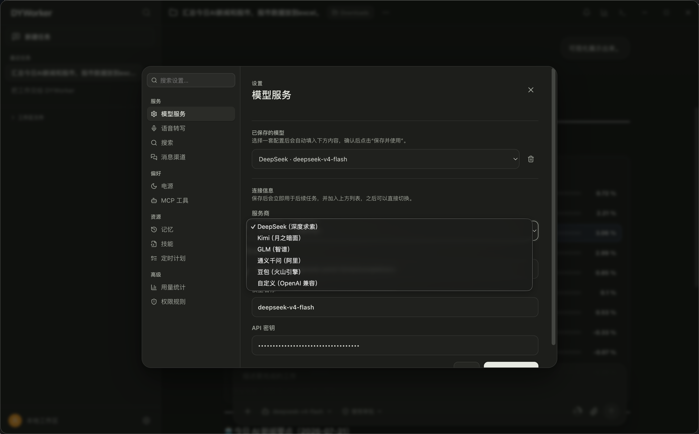
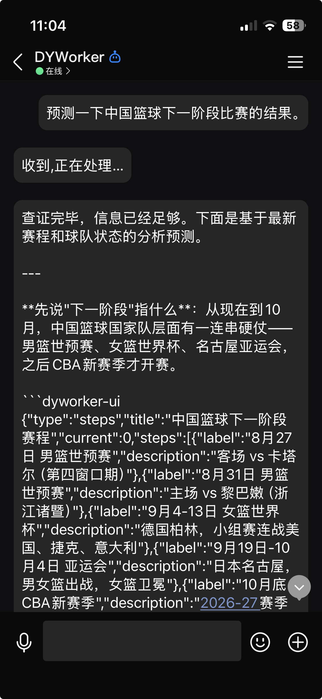
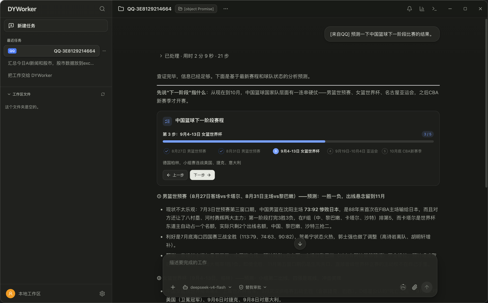
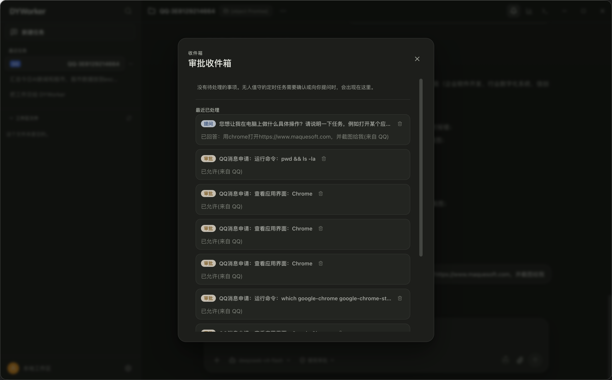

通知、总结、台账、报表反复起草校对，大量时间耗在「找资料、对格式、填表格」上。
工作材料敏感度高，不能把文件随意上传到外部云端 AI，安全合规是硬约束。
办公终端逐步向麒麟、统信 UOS 等国产系统迁移，工具必须跟得上、跑得稳。

以工作区为中心，自然语言派活，自动拆解步骤、逐步执行、随时追溯。
读懂 PDF、Word、Excel、PPT，直接生成真实的 Word 文档和 Excel 表格。
公文格式、单位口径说一次就记住，分偏好、规则、禁忌、事实、经验五类。
常用任务沉淀为模板一键复用，还可安装技能包扩展专项能力。
定时唤醒、断点续跑，长任务不用守着，像同事一样记着把事情做完。
兼容主流模型接口，DeepSeek、通义、智谱或内网自建服务均可接入。
接入 QQ、微信消息渠道，不在电脑前也能远程派活、收结果。
可操作 macOS、Linux 桌面应用，原生支持麒麟 V10 与统信 UOS。
风险操作必确认，文件、命令、联网、外部调用全部留痕。
文本、PDF、Word、Excel、PPT 都能读，会议纪要、政策文件直接「喂」给它。
导出的 Word 符合公文格式规范：标题二号居中、正文三号仿宋、首行缩进、行距二十八磅。
统计表、登记表、汇总表一键生成 Excel，打开即可继续编辑上报。
回答中支持图表、步骤条等可视化展示，方案对比一目了然。

偏好、规则、禁忌、事实、经验分类管理，可全局通用，也可只属于某个工作区。
「我们单位的公文格式要求」「这类材料一律用某口径」，告诉它一次，以后自动遵守。
验证过的常用流程保存为模板，下次同类任务一键复用，做法不走样。
内置技能库，可按需安装专项技能（如公众号发布、地图服务），能力持续生长。

兼容 OpenAI Chat Completions 与 Responses 两套主流接口，填上地址和密钥就能用。
内置 DeepSeek 模型，也可配置通义、智谱等多家服务，按任务自由切换。
支持接入单位内网自建的模型服务，敏感业务全程不出内网。
密钥通过系统安全存储加密保存，绝不明文写入磁盘。



支持 QQ 官方机器人与微信渠道，配置简单，消息直达。
外出、开会、在家，发条消息就能交代任务，做完了结果发回手机。
配合定时唤醒与断点续跑，耗时任务交给它慢慢做，做完主动汇报。
工作区文件、任务数据、登录凭据只保存在本机用户数据目录，不上传云端。
风险命令、本机界面修改先弹窗确认；工作区外路径单次操作单次授权。
文件读写、命令执行、联网访问、外部工具调用全部记录，随时可查可回放。
轨迹控制台完整展示模型请求、工具调用、计划与文件变更的时间线。
模型密钥经系统安全存储加密保存，不明文落盘、不进入代码仓库。
原生支持麒麟 V10（ARM64）与统信 UOS，一条命令打出安装包。

支持 Windows、macOS、麒麟 V10、统信 UOS，安装包一键安装，Windows 免管理员权限。
打开「设置」，填入模型服务地址、模型名称与密钥；内网自建服务同样适用。
选择一个文件夹作为工作区，助手只在该范围内读写，边界清晰。
用一句话描述目标，它自动拆解执行；常用要求说一次，它就长期记住。